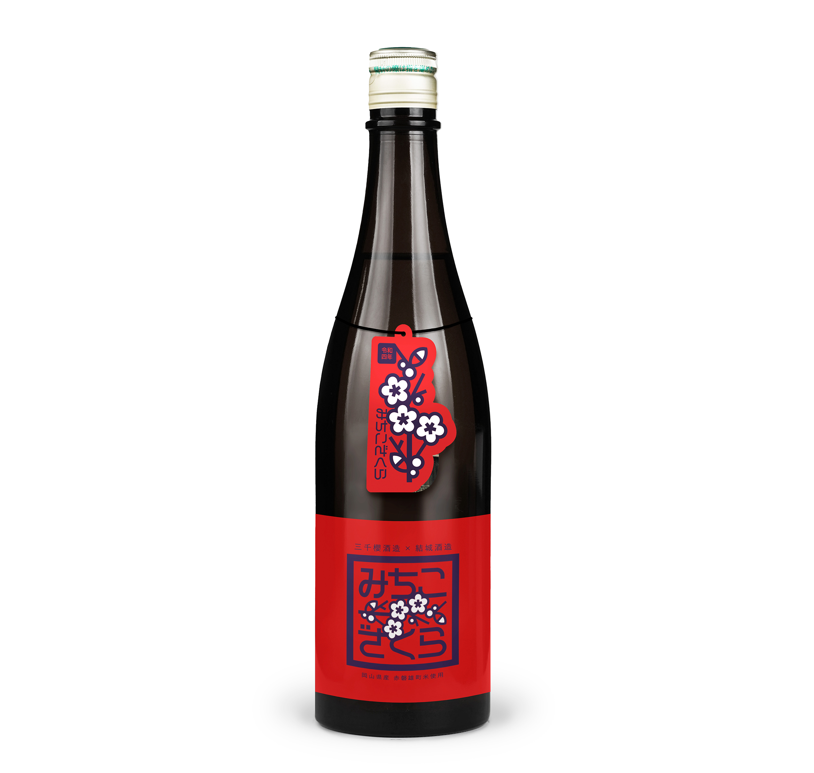
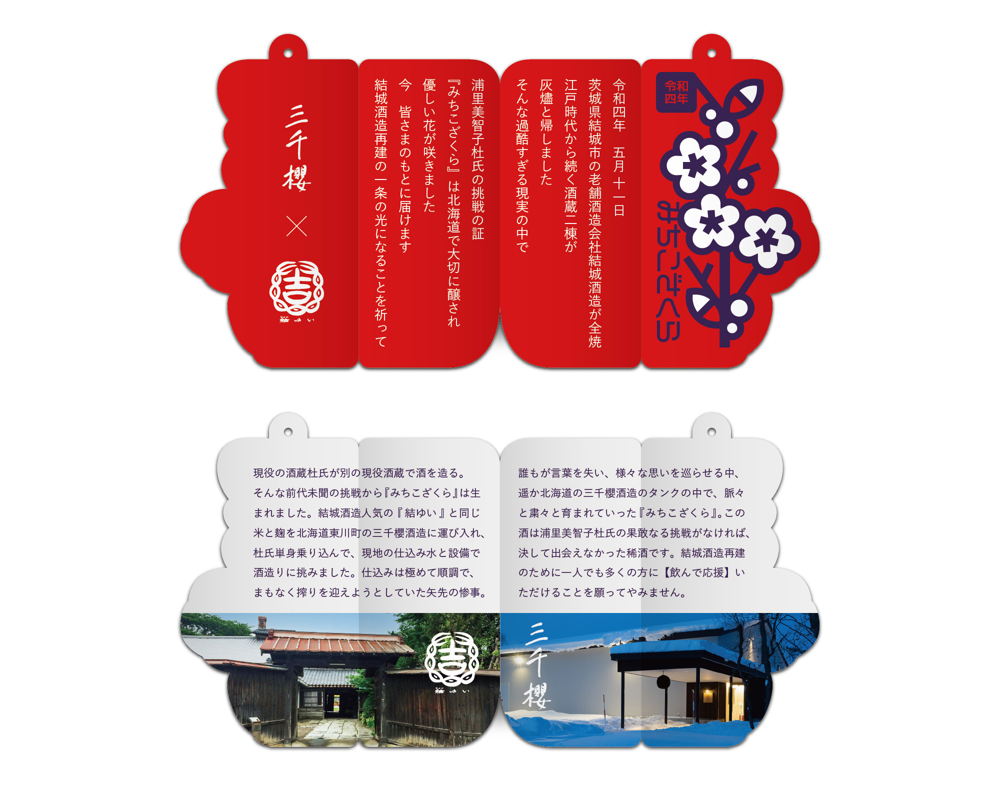

みちこざくら
三千櫻酒造株式会社 / 結城酒造株式会社
パッケージ / リーフレット
2022. 06


パッケージ / リーフレット
2022. 06
現役の酒蔵杜氏が別の現役酒蔵で酒を造るという挑戦から生まれた『みちこざくら』。結城酒造人気の『結ゆい』と同じ米と麹を北海道東川町の三千櫻酒造に運び入れ、杜氏単身乗り込んで、現地の仕込み水と設備で酒造りに挑みました。
赤磐産雄町米を使用することから、赤色をキーカラーに配置。浦里美智子杜氏の明るく可愛らしい印象から、桜の花と製品名をキャッチーな様相で描画しました。
仕込みは極めて順調でまもなく搾りを迎えようとしていた矢先、老舗酒造会社結城酒造が全焼する事故が起こりました。結城酒造再建の一条の光になることを祈って、メッセージを込めたリーフレットを制作し、首にかける形としました。
＜ BACK
© Moeri Ito